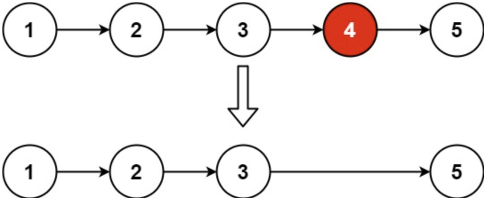

0019-remove nth node from end of list
删除链表的倒数第N个结点
给定一个链表，删除链表的倒数第n个结点，并返回链表的头结点。
示例1

输入: head = [1,2,3,4,5], n = 2
输出: [1,2,3,5]
示例2
输入: head = [1], n = 1
输出: []
示例3
输入: head = [1,2], n = 1
输出: [1]
提示:
- 链表中节点的数目为
sz1 <= sz <= 300 <= Node.val <= 1001 <= n <= sz
代码
# Definition for singly-linked list.
# class ListNode:
# def __init__(self, val = 0, next = None):
# self.val = val
# self.next = next
class Solution:
def removeNthFromEnd(self, head: ListNode, n: int) -> ListNode:
dummyhead = ListNode(next = head)
l1 = l2 = dummyhead
for i in range(n + 1):
l2 = l2.next
while l2:
l1, l2 = l1.next, l2.next
l1.next =l1.next.next
return dummyhead.next
分析
- 设置哑节点指向链表头，以便处理表头情况。
- 设置指针
l1和l2，两者中间间隔n个节点。当l2指向空时，l1指向待删除节点的前驱节点。此时删除l1节点的后继节点即可。